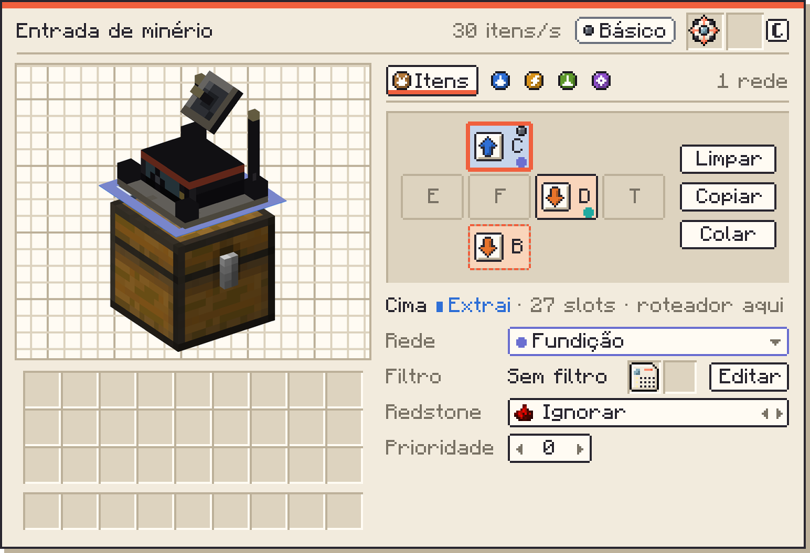
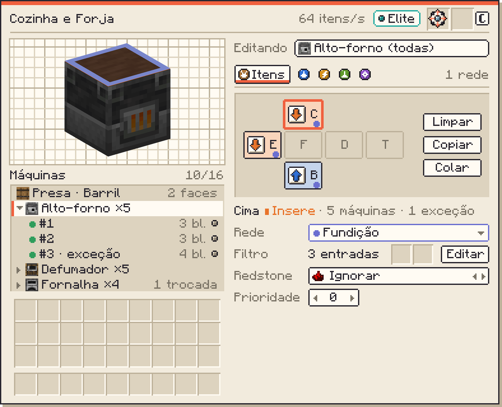
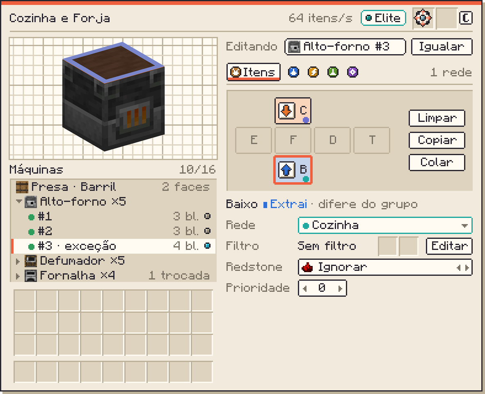

<title>Telas mais limpas</title>
<meta name="claude:viewport-fit-sides" content="cover">
<link rel="stylesheet" href="https://fonts.googleapis.com/css2?family=Chivo:wght@400;600;800&family=Chivo+Mono:wght@400;600&display=swap">
<style>
/* Layout: coluna de leitura; as telas são imagens em pixel, desenhadas com as primitivas do GuiPaint e a fonte do Minecraft, lado a lado com as capturas de hoje. */
:root{
  --bg:#FBF7EF; --paper:#FFFDF8; --ink:#2A2730; --muted:#6F6879; --line:#E3D9C6; --coral:#E0583A; --keep:#2F9D5C;
  --f-body:"Chivo",system-ui,sans-serif; --f-mono:"Chivo Mono",ui-monospace,monospace;
}
@media (prefers-color-scheme: dark){:root:not([data-theme="light"]){--bg:#1C1A20;--paper:#26232B;--ink:#ECE5D6;--muted:#A79F90;--line:#3A3640;--coral:#F26A48;--keep:#3DB56E;color-scheme:dark}}
:root[data-theme="dark"]{--bg:#1C1A20;--paper:#26232B;--ink:#ECE5D6;--muted:#A79F90;--line:#3A3640;--coral:#F26A48;--keep:#3DB56E;color-scheme:dark}
*{box-sizing:border-box}
body{background:var(--bg);color:var(--ink);font:16px/1.6 var(--f-body);
  padding-left:max(16px,env(safe-area-inset-left,0px));padding-right:max(16px,env(safe-area-inset-right,0px));padding-block:32px 64px}
main{max-width:900px;margin:0 auto;display:flex;flex-direction:column;gap:52px}
section{display:flex;flex-direction:column;gap:16px;min-width:0}
h1,h2,h3{text-wrap:balance;line-height:1.15;margin:0}
h1{font-size:clamp(2rem,6vw,3rem);font-weight:800;letter-spacing:-.01em}
h2{font-size:1.55rem;font-weight:800}
h3{font-size:1.05rem;font-weight:600}
p{margin:0;max-width:68ch}
.eyebrow{font:600 .75rem/1 var(--f-mono);letter-spacing:.12em;text-transform:uppercase;color:var(--coral)}
.lede{font-size:1.12rem}
.muted{color:var(--muted)}
code{font-family:var(--f-mono);font-size:.84em;background:var(--paper);border:1px solid var(--line);padding:0 .3em;border-radius:3px;overflow-wrap:anywhere}
.stripe{height:4px;background:var(--coral);width:72px}
ul.tight{margin:0;padding-left:1.2em;display:flex;flex-direction:column;gap:6px;max-width:70ch}
.tag{font:600 .7rem var(--f-mono);letter-spacing:.08em;text-transform:uppercase;padding:2px 8px;border:1px solid currentColor;align-self:flex-start}
.tag.before{color:var(--muted)} .tag.after{color:var(--coral)}
figure{margin:0;display:flex;flex-direction:column;gap:8px;min-width:0}
figcaption{font-size:.85rem;color:var(--muted);max-width:72ch}
figure img{display:block;max-width:100%;height:auto}
figure img.px{image-rendering:pixelated}
figure img.shot{border:1px solid var(--line)}
.pair{display:grid;grid-template-columns:repeat(auto-fit,minmax(min(100%,400px),1fr));gap:18px;align-items:start}
.tablewrap{overflow-x:auto;border:1px solid var(--line);background:var(--paper)}
table{border-collapse:collapse;width:100%;font-size:.92rem}
th,td{text-align:left;padding:9px 12px;border-bottom:1px solid var(--line);vertical-align:top}
th{font:600 .72rem var(--f-mono);letter-spacing:.06em;text-transform:uppercase;color:var(--muted)}
td.k{font-weight:600;white-space:nowrap}
tr:last-child td{border-bottom:0}
.q{background:var(--paper);border:1px solid var(--line);padding:14px 16px;display:flex;flex-direction:column;gap:4px}
</style>

<main>

<header style="display:flex;flex-direction:column;gap:14px">
  <span class="eyebrow">Estudo de interface · versão 4</span>
  <h1>Telas mais limpas</h1>
  <div class="stripe"></div>
  <p class="lede">As telas abaixo não são mais HTML imitando o jogo. Foram desenhadas pixel a pixel com as mesmas funções de desenho do mod (<code>box</code>, <code>pill</code>, <code>tab</code>, <code>eye</code>, <code>dot</code>, <code>inset</code> do <code>GuiPaint</code>), a fonte do Minecraft, os sprites das portas e dos tipos do mod e o visor 3D recortado da captura real.</p>
  <p class="muted">A direção é a da versão 3: o cubo das faces funciona como a configuração de lados do Mekanism. O que mudou foi o acabamento: os botões estão agrupados num quadro, cada controle tem rótulo e tudo usa o tamanho e a borda dos controles de hoje.</p>
</header>

<section>
  <span class="eyebrow">1 · Roteador</span>
  <h2>O cubo é o seletor de modo</h2>
  <div class="pair">
    <figure><span class="tag before">Hoje</span></figure>
    <figure><span class="tag after">Versão 4</span></figure>
  </div>
  <div class="tablewrap"><table>
    <thead><tr><th>Parte</th><th>Como fica</th></tr></thead>
    <tbody>
      <tr><td class="k">Cubo</td><td>Seis botões de 30 × 22 num quadro afundado, como a janela de lados do Mekanism. Com modo: o sprite da porta do mod, a letra do lado e o fundo na cor do modo. Sem modo: só a letra, apagada. A bolinha é a rede; o Olho marca a face do roteador; tracejado coral é face com modo e sem rede.</td></tr>
      <tr><td class="k">Cliques</td><td>Clique avança o modo (Extrai → Insere → Armazém → Nenhum) e escolhe a face; clique direito volta; Shift + clique zera. Clicar no visor 3D escolhe a face sem mudar o modo.</td></tr>
      <tr><td class="k">Limpar · Copiar · Colar</td><td>Ao lado do cubo, no mesmo quadro. Limpar zera as faces do tipo aberto (com Shift, de todos). Copiar e Colar levam a configuração de uma face para outra.</td></tr>
      <tr><td class="k">Linha da face</td><td>"Cima ▪ Extrai · 27 slots · roteador aqui": o que está sendo editado, com o modo na cor dele. Substitui os quatro botões de modo e a frase explicativa.</td></tr>
      <tr><td class="k">Rede, Filtro, Redstone, Prioridade</td><td>Quatro linhas com rótulo à esquerda e controle à direita, todas da mesma altura. Os cartões de filtro ficam na linha do Filtro. Redstone troca com ‹ › e mostra o pó de redstone; Prioridade com ‹ ›.</td></tr>
      <tr><td class="k">Fica igual</td><td>Visor 3D, cabeçalho com vazão, tier e upgrades, abas com os ícones dos tipos, inventário e tema.</td></tr>
    </tbody>
  </table></div>
</section>

<section>
  <span class="eyebrow">2 · Alcance</span>
  <h2>Grupo e máquina na mesma tela</h2>
  <p>A coluna da esquerda junta o visor (menor, da máquina escolhida) e a lista, com uma linha por máquina. A da direita é a mesma do roteador, com a barra "Editando" no alto. Escolher o grupo edita as cinco máquinas; escolher uma máquina edita só ela e vira exceção.</p>
  <div class="pair">
    <figure><span class="tag before">Hoje</span></figure>
    <figure><span class="tag after">Versão 4 · editando o grupo</span></figure>
  </div>
  <figure>
    <span class="tag after">Versão 4 · editando uma máquina</span>
    
    <figcaption>A máquina #3 escolhida: a barra diz "Alto-forno #3" e ganha o botão Igualar (o "Voltar a igual às outras" de hoje). A face de baixo dela manda para outra rede, e a linha da face diz "difere do grupo". O Olho da linha aceso destaca a máquina no mundo.</figcaption>
  </figure>
  <ul class="tight">
    <li><b>Uma linha por máquina:</b> estado, número, distância e o Olho. As coordenadas vão para a dica.</li>
    <li><b>Grupo com o ícone do bloco</b> e ▾/▸ para recolher; "1 trocada" aparece no grupo quando alguma máquina foi trocada.</li>
    <li><b>Os botões da linha escolhida</b> (renomear, Atualizar, Tirar redes, Desvincular) continuam como hoje; ficaram fora do desenho para não poluir a comparação.</li>
  </ul>
</section>

<section>
  <span class="eyebrow">Próximo</span>
  <h2>Tablet e filtro</h2>
  <ul class="tight">
    <li><b>Filtro:</b> fica como está, com todas as funções.</li>
    <li><b>Tablet:</b> o painel do nó escolhido passa a ser o mesmo da versão 4. A visão "Grade" no estilo do XNet desenho no mesmo método, se você aprovar o roteador e o alcance.</li>
  </ul>
</section>

<section>
  <span class="eyebrow">Para você decidir</span>
  <h2>Duas perguntas</h2>
  <div class="q"><b>1. A letra do lado no botão (C, E, F, D, T, B) basta?</b><span class="muted">O nome inteiro aparece na linha da face e na dica. A alternativa é botão mais largo com o nome curto (Cima, Esq., Fren.).</span></div>
  <div class="q"><b>2. Limpar, Copiar e Colar ao lado do cubo?</b><span class="muted">Hoje copiar e colar existem só pelo Configurador e pelo Tablet. Na tela seria entre faces do mesmo roteador.</span></div>
</section>

<footer class="muted" style="font-size:.85rem;border-top:1px solid var(--line);padding-top:16px">
  Desenho em escala 1 ampliado 3 vezes, com o tema claro do <code>GuiPalette</code>. Referências lidas: Mekanism (<code>GuiSideConfiguration</code>, <code>SideDataButton</code>), Pipez, XNet e Logistics Network. 21 de outubro de 2026.
</footer>
</main>
